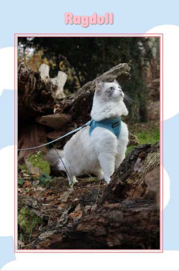
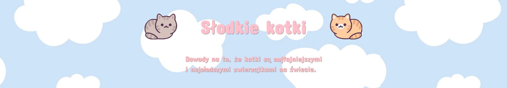

Website made for girlfriend.
This website was created for my girlfriend who supports me on a daily basis. I wanted to give her a unique gift to appreciate what she does for me every day. Cats are the theme of this page. The cat representing the Ragdoll breed is our cat. Looking majestic as always.
I wanted this site to look a bit childish and cheerful. Just like my idea of cats. The site contains short descriptions of my girlfriend's favorite cat breeds. The layout of the page elements was mainly done with flexes.
The page page contains hovers responsible for changing the cursor's appearance. Hovers highlight links to subpages. A link to the subpage is hidden under one of the elements. To make this site a bit of a game. Despite the simplicity of this page, there is something special about it.